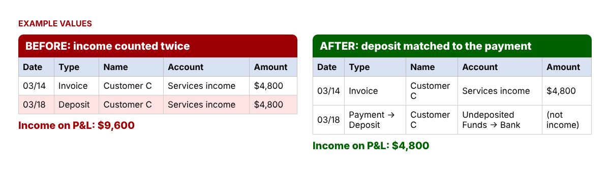

You open your Profit & Loss in December and the income looks too good, or too low, compared with what you remember putting in the bank. This is one of the most repeated questions in QuickBooks user forums: "my income is doubled," "my P&L shows the invoices and the bank deposits," "why doesn't my income match my deposits?" The fix is rarely one magic button. It is a simple tie-out: start from the bank, remove what is not income, add back what never reached the bank, and compare. If you do it before year-end, you hand your tax preparer numbers you can explain.
It shows up most often in businesses that send invoices and use bank feeds, businesses paid through card processors or marketplaces (payouts arrive net of fees), and owners who move money between personal and business accounts. Overstated income can mean paying tax on money you never earned. Understated income is worse if anyone ever asks you to show how you got the number: the IRS lists deposit information among the records that support gross receipts.
Expected income = Bank deposits − Non-income deposits + Add-backs ± Timing. Then Gap = Income on your P&L − Expected income. A gap close to zero means your books tie out.
Add the "total deposits" line from all twelve monthly statements for every business account. The bank's number is your anchor. In Excel or Google Sheets, put the monthly totals in B2:B13 and type =SUM(B2:B13).
Go through the statements and list transfers from your own accounts, loan or credit-line money, owner money you put in, vendor refunds and rebates, and sales tax you collected. With a type in column C and amounts in column D, =SUMIF(C:C,"Loan",D:D) totals each type and =SUM(D:D) gives the total to subtract.
Card processors and marketplaces deduct fees before paying you, so your sales are higher than your deposits. Add those fees back, plus cash sales you spent before depositing and any payments still sitting in Undeposited Funds on December 31.
Subtract last year's sales that were deposited this January; add this year's sales deposited next January. If your P&L is on the accrual basis, also add the increase in accounts receivable for the year.
| Line (EXAMPLE VALUES) | Amount |
|---|---|
| Total bank deposits | $186,450 |
| − Non-income deposits (transfer, loan, owner money, refund) | ($22,850) |
| + Processor fees, cash spent, Undeposited Funds | +$3,940 |
| − Last year's sales deposited in January | ($3,400) |
| + This year's sales deposited next January | +$2,750 |
| = Expected income | $166,890 |
| Income on the P&L | $171,690 |
| Gap | +$4,800 |
In Excel: =B1-B2+B3-B4+B5 for expected income and =B7-B6 for the gap. A positive gap usually means something was counted twice. A negative gap usually means a sale is missing or a deposit went to a balance-sheet account.
Export your income transactions (QuickBooks report: Transaction Detail by Account, income accounts only) to a sheet with Date in A, Type in B and Amount in E. Next to each Deposit row, this formula flags a sale with the same amount within 7 days: =IF(B2="Deposit",IF(COUNTIFS(B:B,"<>Deposit",E:E,E2,A:A,">="&A2-7,A:A,"<="&A2+7)>0,"CHECK",""),"").


| Cause | Gap | Fix |
|---|---|---|
| Deposit coded to income and invoice also paid | Higher | Match the deposit to the payment |
| Transfer between your accounts coded as income | Higher | Record it as a transfer |
| Loan or owner money coded as income | Higher | Use the loan or owner equity account |
| Bank-feed deposit downloaded twice | Higher | Exclude or delete the duplicate |
| Payout net of fees, fees not recorded | Lower | Add the fee line on the deposit |
| Sale never entered | Lower | Enter the sale, then match the deposit |
Many owners accept a gap of a few dollars (rounding, small bank interest timing). Anything close to a single deposit or a round number deserves a look.
No. Interest is income on the P&L and is also a deposit, so it needs no adjustment.
For 2026, payment apps and marketplaces generally issue one when payments for goods or services exceed $20,000 and 200 transactions, per the IRS. You still report all business income whether or not you receive one.
They are deposits but not sales. Record them against the original expense, and list them as non-income in the tie-out.
You can download the ready-made Bank Deposits vs Income Tie-Out Kit for free in the Free kit download box below (Excel + PDF guide, no sign-up).
This article is for educational purposes only and is not tax, legal or accounting advice. How a deposit is reported on your return depends on your facts; ask a qualified tax professional. Menu names in QuickBooks Online change often and may differ on your screen. QuickBooks is a registered trademark of Intuit Inc.; not affiliated with or endorsed by Intuit.